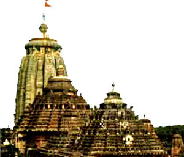
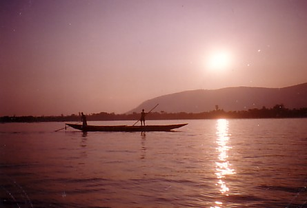

History Of Odisha
Temples & Monuments
Wildlife
Heritage Odisha
Art & Craft
Tourist Spots
Puri
One of the four celebrated religious centers of India, Puri, the abode of Lord Jagannath needs no introduction. According to tradition Puri was once a thickly wooded hill inhabited by the Sabaras (Pre-Aryan and Pre-Dravidian tribes of the Austric linguistic family). The sunny beach at Puri is one of the finest in the world. Watching the sunrise in a symphony of colours is a wonderful experience. It is one of the most popular sea-side resorts where visitors from any part of the globe can comfortably relax.

Places of tourist interest in Puri :
The Temple of Lord Jagannath built during the 12th century A.D. by Chodaganga Deva dominates the landscape for kilometers around. Being the tallest temple (65 metres) in Orissa, it is one of the most magnificent pieces of monuments of India. In front of the main gate stands a 16 sided monolithic pillar (11 metres high), called Aruna Stambha which formally stood in front of the Sun Temple and was brought to Puri during the 18th century A.D. Some of the other important temples are Gundicha, Lokanath, Sunaragauranga, Daria Mahabir and Tota Gopinatt. There are also a number of holy tanks like Narendra, Markandeya, Sweta Ganga and Indradyumna. There are many Monasteries locally known as Mathas also of touristic interest.
Chilika
Just south of Puri the sea mixes with the 1100 sq.km inland Chilika Lake to create the largest brackish water lake in Asia. These shallow waters enclose an immense area of marshes, lowlands, and islands. It abounds with a variety of fish, crabs, prawns throughout the year and migratory birds make it their home in Winter (November through March).

This brackish water lake attracts around 150 species of migratory birds every year during winter and hence is a bird-watcher's paradise. It is an interesting world of around 158 different species aquatic & wild life including insects, mollusks, fishes, prawns, amphibians, reptiles, birds and animals. Limbless skink, a rare reptile which was discovered for the first time from loose soil, attaches much significance to this place.
The Lake is dotted with a number of islands. The Island of Nalabana, 8 km in circumference occupies a unique place in the vast expanse of Chilika Lake as it happens to be a sanctuary and the central refuge point for the migratory birds. Kalijai Island is the abode of Goddess Kalijai, venerated by the local fisher folks. This island plays host to a huge fair on 'Makar Sankranti' held annually in the month of January. The large fishing community adds flavor to the lake. Rajhansa Island near the confluence of the lake and sea (New Mouth) offers a fantastic beach. The Irawady Dolphins can be seen palyfully cavorting in the channels approching the sea mouth near Satapada. Some of the Islands bears romantic names like Honeymoon Island and Breakfast Island.
Chilika is worth visiting round the year.However, the winter months, when the air reverberates with the din of the birds, are the nicest times. Barkul, Rambha, Balugaon and Satpada are the bases for visiting Chilika, where boats can be hired.
Konark
The magnificent Sun Temple at Konark is the culmination of Orissan temple architecture, and one of the most stunning monuments of religious architecture in the world. The poet Rabindranath Tagore said of Konark that 'here the language of stone surpasses the language of man', and it is true that the experience of Konark is impossible to translate into words.

The massive structure, now in ruins, sits in solitary splendour surrounded by drifting sand. Today it is located two kilometers from the sea, but originally the ocean came almost up to its base. Until fairly recent times, in fact, the temple was close enough to the shore to be used as a navigational point by European sailors, who referred to it as the 'Black Pagoda'.
Built by King Narasimhadeva in the thirteenth century, the entire temple was designed in the shape of a colossal chariot, carrying the sun god, Surya, across the heavens. Surya has been a popular deity in India since the Vedic period and the following passages occur in a prayer to him in the Rig Veda, the earliest of sacred religious text:
"Aloft his beams now bring the good, Who knows all creatures that are born, That all may look upon the Sun. The seven bay mares that draw thy car, Bring thee to us, far-seeing good, O Surya of the gleaming hair. Athwart in darkness gazing up, to him the higher light, we now Have soared to Surya, the god Among gods, the highest light."
So the image of the sun god traversing the heavens in his divine chariot, drawn by seven horses, is an ancient one. It is an image, in fact, which came to India with the Aryans, and its original Babylonian and Iranian source is echoed in the boots that Surya images, alone among Indian deities, always wear.
The idea of building an entire temple in the shape of a chariot, however, is not an ancient one, and, indeed, was a breathtakingly creative concept. Equally breathtaking was the scale of the temple which even today, in its ruined state, makes one gasp at first sight. Construction of the huge edifice is said to have taken 12 years revenues of the kingdom.
The main tower, which is now collapsed, originally followed the same general form as the towers of the Lingaraja and Jagannath temples. Its height, however, exceeded both of them, soaring to 227 feet. The jagmohana (porch) structure itself exceeded 120 feet in height. Both tower and porch are built on high platforms, around which are the 24 giant stone wheels of the chariot. The wheels are exquisite, and in themselves provide eloquent testimony to the genius of Orissa's sculptural tradition.
At the base of the collapsed tower were three subsidiary shrines, which had steps leading to the Surya images. The third major component of the temple complex was the detached natamandira (hall of dance), which remains in front of the temple. Of the 22 subsidiary temples which once stood within the enclosure, two remain (to the west of the tower): the Vaishnava Temple and the Mayadevi Temple. At either side of the main temple are colossal figures of royal elephants and royal horses.
Just why this amazing structure was built here is a mystery. Konark was an important port from early times, and was known to the geographer Ptolemy in the second century AD. A popular legend explains that one son of the god Krishna, the vain and handsome Samba, once ridiculed a holy, although ugly, sage. The sage took his revenge by luring Samba to a pool where Krishna's consorts were bathing. While Samba stared, the sage slipped away and summoned Krishna to the site. Enraged by his son's seeming impropriety with his stepmothers, Krishna cursed the boy with leprosy. Later he realized that Samba had been tricked, but it was too late to withdraw the curse. Samba then travelled to the seashore, where he performed 12 years penance to Surya who, pleased with his devotion, cured him of the dreaded disease. In thanksgiving, Samba erected a temple at the spot. In India, history and legend are often intextricably mixed. Scholars however feel that Narasimhadeva, the historical builder of the temple, probably erected the temple as a victory monument, after a successful campaign against Muslim invaders.
In any case, the temple which Narasimhadeva left us is a chronicle in stone of the religious, military, social, and domestic aspects of his thirteenth century royal world. Every inch of the remaining portions of the temple is covered with sculpture of an unsurpassed beauty and grace, in tableaux and freestanding pieces ranging from the monumental to the miniature. The subject matter is fascinating. Thousands of images include deities, celestial and human musicians, dancers, lovers, and myriad scenes of courtly life, ranging from hunts and military battles to the pleasures of courtly relaxation. These are interspersed with birds, animals (close to two thousand charming and lively elephants march around the base of the main temple alone), mythological creatures, and a wealth of intricate botanical and geometrical decorative designs.
The famous jewel-like quality of Orissan art is evident throughout, as is a very human perspective which makes the sculpture extremely accessible. The temple is famous for its erotic sculptures, which can be found primarily on the second level of the porch structure. The possible meaning of these images has been discussed elsewhere in this book. It will become immediately apparent upon viewing them that the frank nature of their content is combined with an overwhelming tenderness and lyrical movement. This same kindly and indulgent view of life extends to almost all the other sculptures at Konark, where the thousands of human, animal, and divine personages are shown engaged in the full range of the 'carnival of life' with an overwhelming sense of appealing realism.
Bhubaneswar
Bhubaneswar, the capital of Orissa, is also popularly known as the "Temple City of India". Being the seat of Tribhubaneswar or 'Lord Lingaraj', Bhubaneswar is an important Hindu pilgrimage centre. Hundreds of temples dot the landscape of the Old Town, which once boasted of more than 2000 temples. Bhubaneswar is the place where temple building activities of Orissan style flowered from its very inception to its fullest culmination extending over a period of over one thousand years.

The new Bhubaneswar with its modern buildings and extensive infrastructure perfectly complements its historic surroundings. With facilities to cater to every type of visitor, Bhubaneswar makes an ideal tourist destination.
Some of the other important tourist spots of Bhubaneswar are:
The twin hills of Kumargiri and Kumarigiri known as Khandagiri and Udaygiri contain varieties of rock-cut caves, built mainly for the jain monks around 1st - 2nd century B.C.#The thirteen years lithic record of King Kharavela engraved in Hatigumpha (elephant cave) is a magnificent specimen of Pali records so far found in India.
Cactus garden situated close to the 'Ekamara Kanan' in Bhubaneswar, the Cactus Garden, with its huge collection of Cactii should not be missed.
Cuttack
Cuttack, the former capital and one of the oldest cities of Orissa is the administrative headquarters of the district. The town is situated at the apex of the delta formed by the rivers Mahanadi in the North and Kathajodi in the South. It serves as a convenient base for touring the various places of interest in the district.
Berhampur
Famous for its silks, Berhampur, the major commercial town of the district of Ganjam, is a convenient base point from where a tourist can plan his visit to various places of interest in the area.

Sambalpur
Sambalpur, the gateway to the bewitching western zone of Orissa abounding in lush green forests, colourful wild life, captivating waterfalls; rich tribal culture, folk songs and dances and a variety of monuments finds mention in the works of Ptolemy (2nd century A.D.) as "Sambalaka". Associated with the celebrated name of its ruler Indrabhuti , the teacher-propounder of the Vajrayana Buddhism, Sambalpur has earned a place in the cultural history of India. Here, one can visit the temples of Samaleswari, Patneswari, Budha Raja, Brahmapura and the Gopaljee monastery.